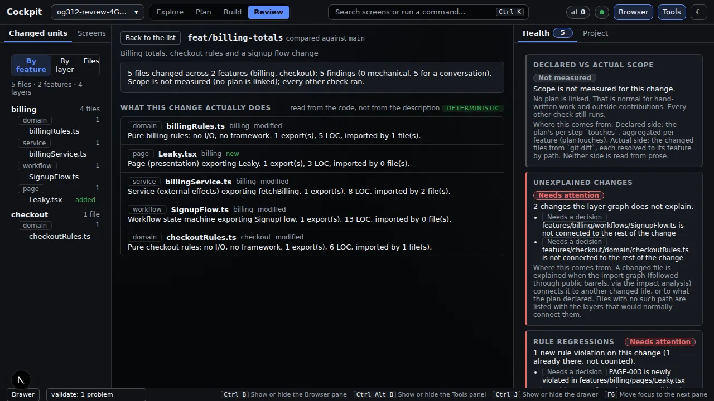
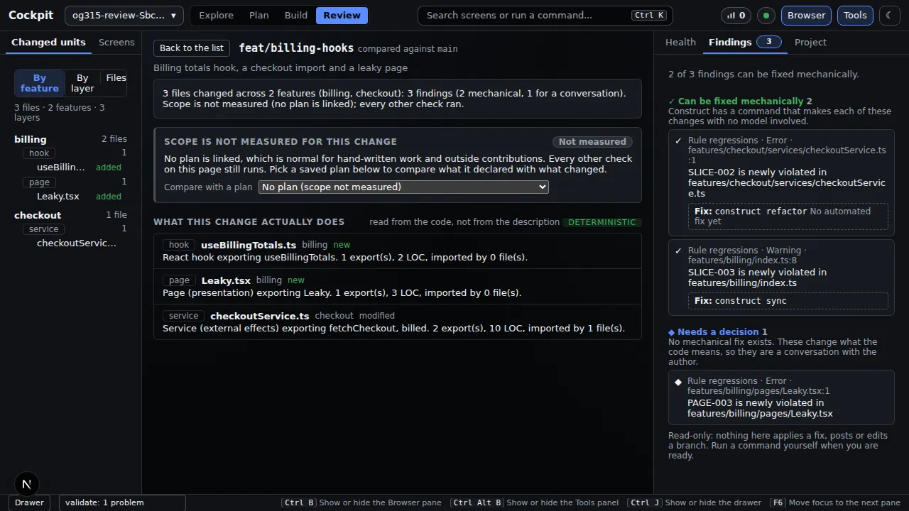

Cockpit
Review a branch by what it means
Five deterministic indicators, mechanical fixes apart from decisions.
Problem. A pull request is a pile of changed lines. Reviewing it means rebuilding, in your head, which feature each line belongs to, what depends on it, and whether it broke a rule your project already had.
The Review screen reads two git refs and shows what the change means: the changed units grouped by feature and part, what each one now does, and five indicators computed from your own architecture.yml. No model, no network, no GitHub login: local branches are first-class.
This page shows the Cockpit only. The same report from a terminal is in the CLI examples; the engine behind it is in the Core examples.
Do this#
1. Pick a branch#
Review in the top bar lists the current project's local branches compared against a base (main by default), riskiest first: branches with more indicators needing attention, then more findings. A legend on the right explains every badge (scope, rule regressions, unexplained changes, public API, flow changed).
2. Read what the change does#
Open a branch. The Browser pane groups the changed files by feature, part or file; the stage says in one line what each changed unit now does, read from the code and not from the description; the Tools pane shows the indicators.

The five indicators:
| Indicator | What it tells you |
|---|---|
| Scope | what the plan declared versus what the change touched (grey "Not measured" when there is no plan, which is normal) |
| Unexplained changes | changed files with no import path to the rest of the change |
| Rule regressions | violations that are new on this branch; existing ones are counted as a number, never blamed on it |
| Public API | exports that stopped or started being public, and who imports them |
| Flow changed | which routes through a workflow appeared or disappeared, in plain English |
3. Findings: fix by machine, or decide#
The Findings tab splits every finding into two groups that are never mixed: ones a Construct command can fix mechanically, shown with the exact command, and ones that need a human decision. Review is read-only: it shows the command and never runs it.

Pick a saved plan from Compare with a plan and the scope check compares what that plan declared with what changed. If something goes wrong the screen says what happened and what to do next; a repository with no other branch says so; a change larger than 200 files shows a summary and which checks still ran.
You get#
| You get | Evidence above |
|---|---|
| Review that knows your rules | rule regressions, new versus pre-existing |
| Meaning, not lines | "what this change actually does" |
| Mechanical and human findings kept apart | the Findings tab |
| No writes | read-only; the command is shown, not run |
Why it matters#
You review what a change means and decide on a short list, instead of rebuilding the picture from changed lines.
Checked against commit 081150b on 2026-09-20 (wording revised for plain language on the same day). Screenshots come from the project's own Playwright runs of these screens.